Playing in your club’s leagues
Sign in, join your club and its leagues, see who you play, and enter your scores. Follow Alex through their first Stage.
Get into your club
-
Open your club’s link
Your club’s manager shares one link, in the club’s chat or by email. Open it, type your email address and press Email me a sign-in link. There’s no password to remember.
Already a member? Open the app and sign in the same way.
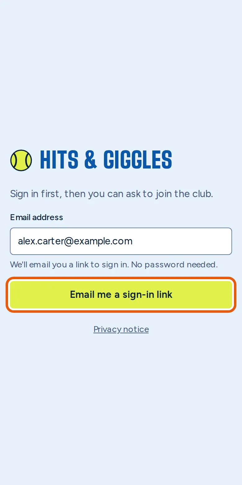
-
Open the email
Press the link in it. It works once, for 15 minutes. If it’s too late, just ask for a fresh one.
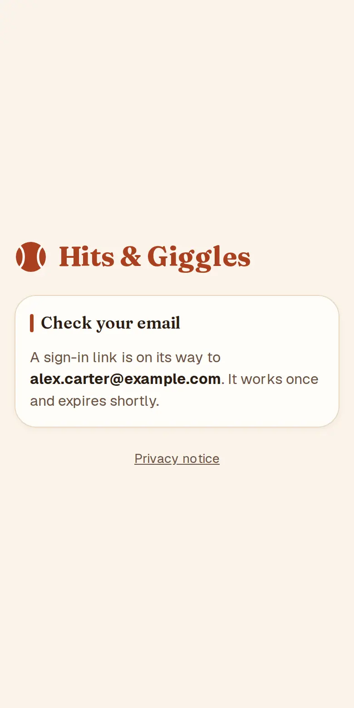
-
Press Sign in
That signs you in on the device you’re holding, and you stay signed in for 30 days.
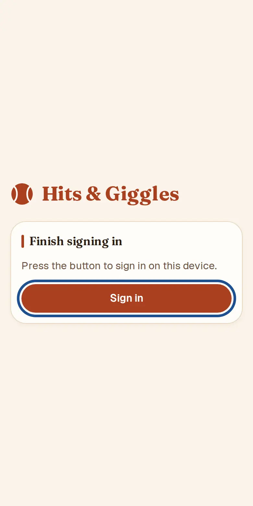
-
Say who you are
The first time, the app asks for your name. It’s what other players see on ladders and scores, and you can change it later in Profiles.
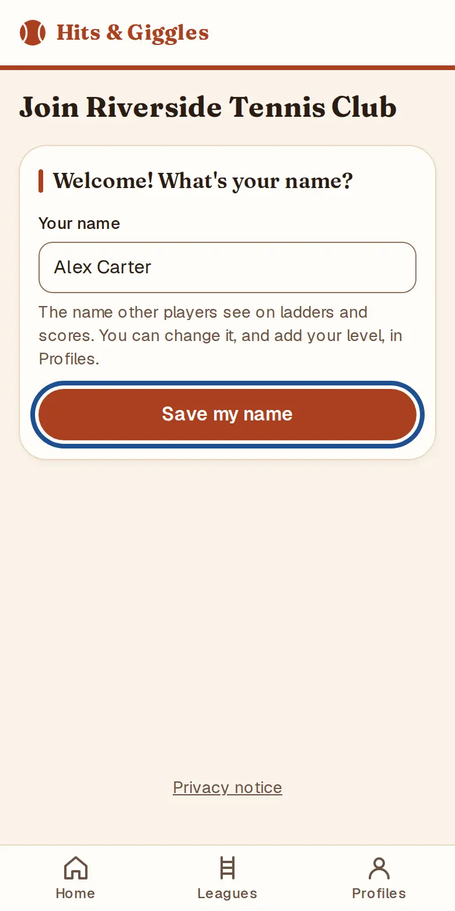
-
Ask to join
Press Ask to join. A manager of the club approves each request.
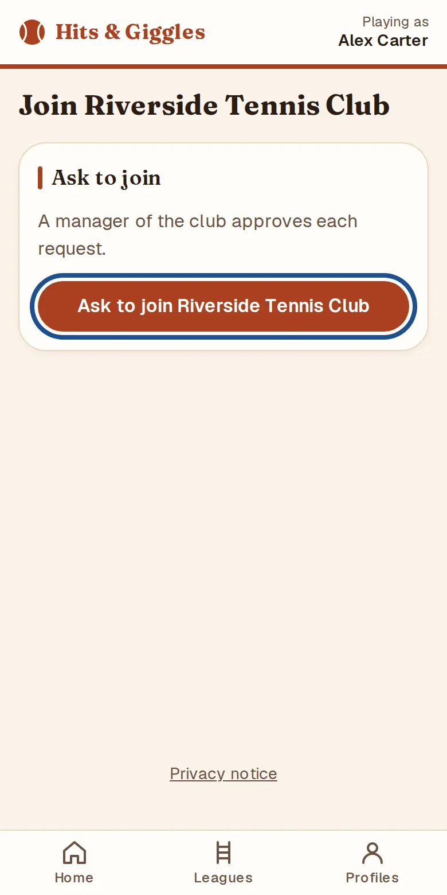
-
Wait to be let in
Come back later and Home shows whether you’re in. The app doesn’t send an email about it.
If a manager added your email address already, you’re in once you’ve signed in and said who you are.
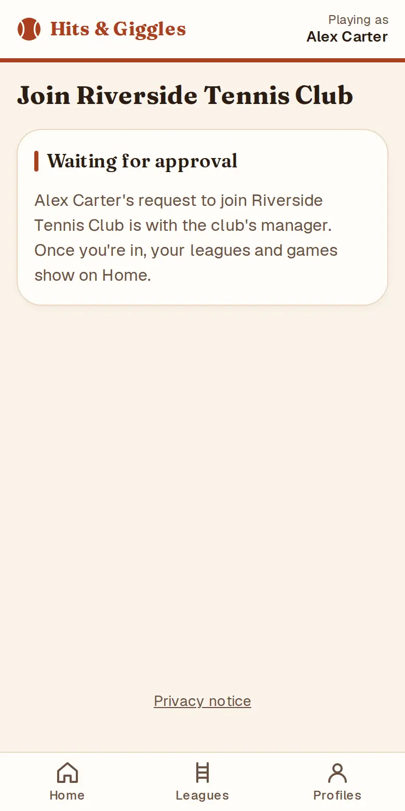
-
Add your details
In Profiles, press Edit. Plays as is for men’s, women’s and mixed leagues, and Level is the club’s own grouping, 1 to 5. Both can stay empty.
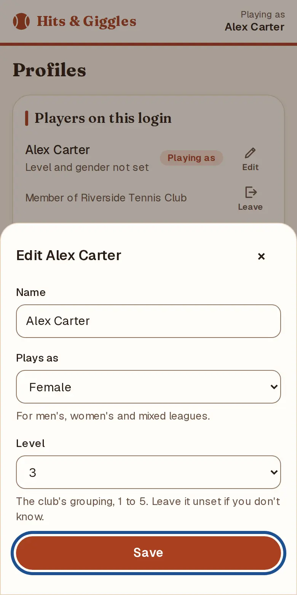
Join a league
-
Find a league
Leagues shows the ones you’re in, and the ones at your club you can join. Press Ask to join.
In a doubles league you can name a partner from the club, or ask alone and let the manager pair you.
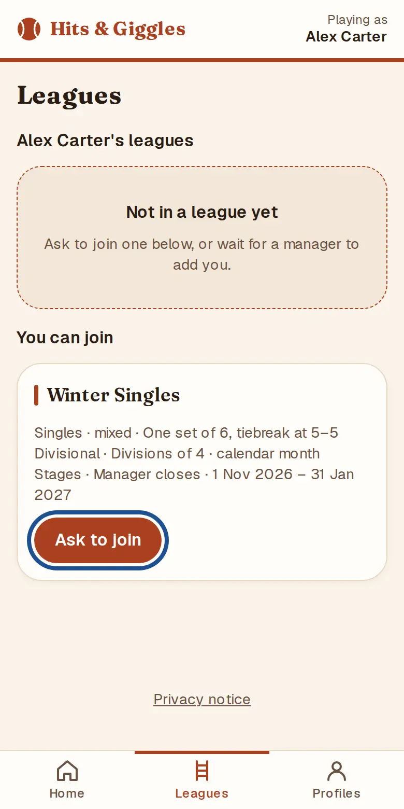
-
Your request is sent
Whoever runs the league decides. Until then you can Take back the request.
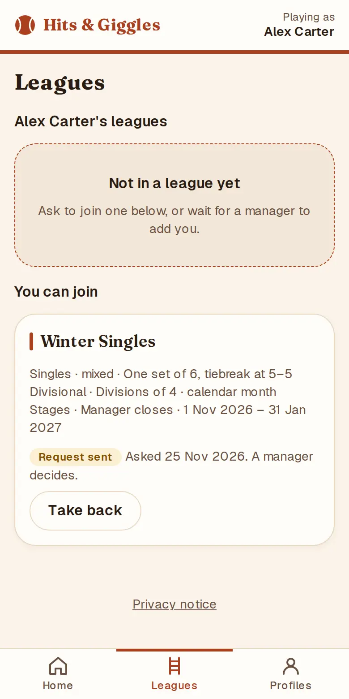
Play your games
-
See who you play
Once the league starts, Home lists your games for this Stage and the day to play them by. You play everyone in your Division once. Arrange each game between you: that part is up to you.

-
Look at the ladder
Ladder shows every Division, from the top, and every game in it. It marks yours, and says who runs the league.
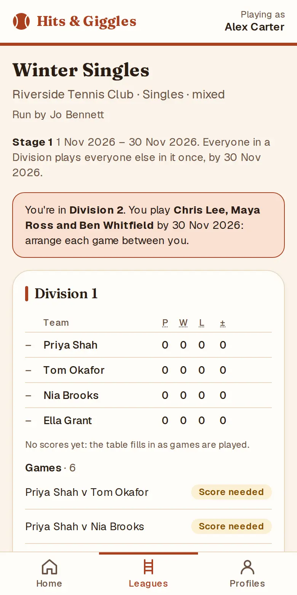
-
Open a game after you’ve played
Press any of your games, then Enter score. Either of you can do it.
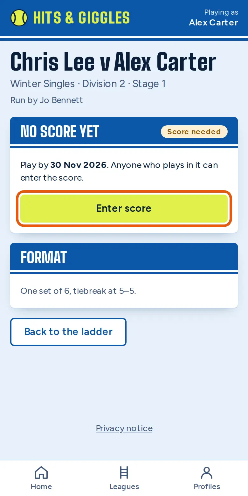
-
Enter the score
Set the day you played, then tap + and −. The app says who wins, and won’t save a score that can’t happen.
- At 5–5 it asks for the tiebreak points.
- Stopped by rain or an injury? Tick Stopped early, leave the sets as they stood, and say who won.
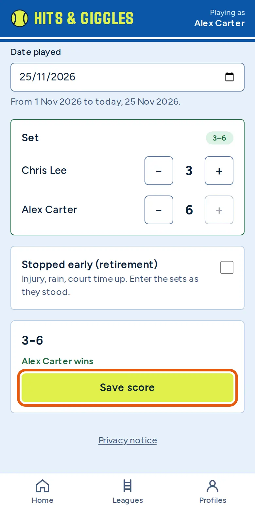
-
Saved, for everyone to see
A mistake? Anyone who played can Correct the score while the Stage is open. Every change stays in the history: who, when, and what it was before.
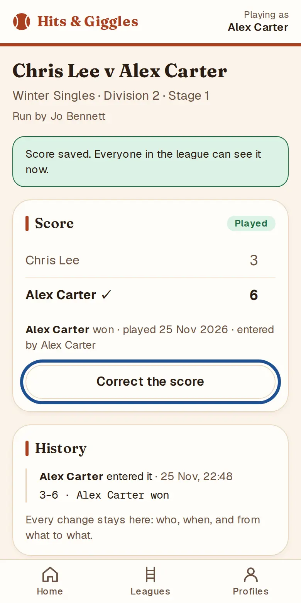
-
Keep up from Home
Home counts the scores you still owe.
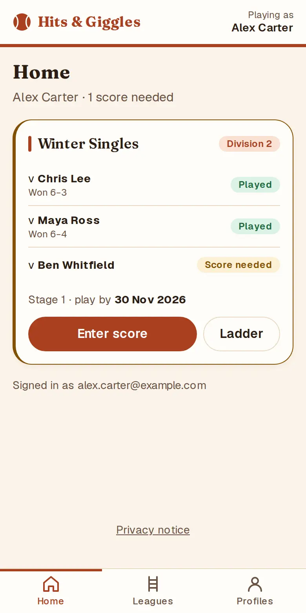
Move up the ladder
-
Follow the table
You’re ranked by wins, then by the difference in games, then by the results between you. The arrows show who would move if the Stage closed now.
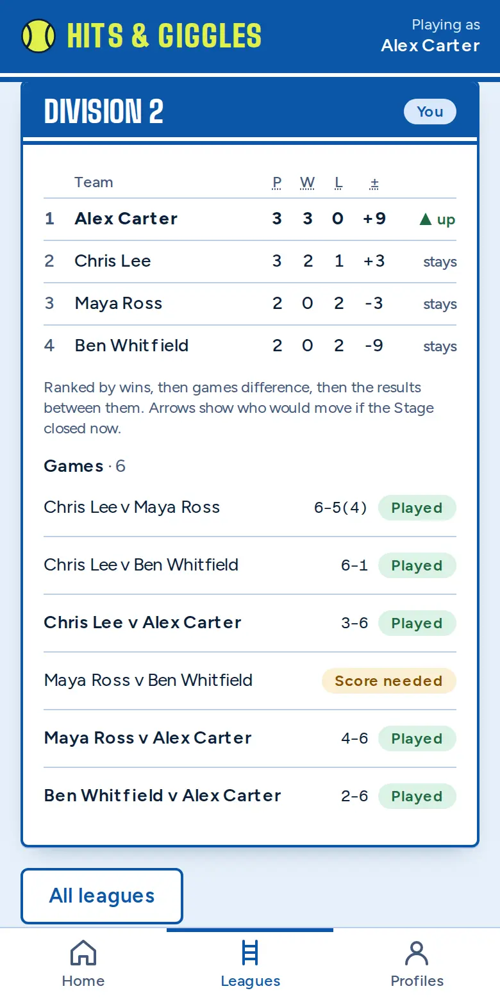
-
A new Stage, a new Division
When the Stage closes, the first in each Division goes up one and the last goes down one. The very top and the very bottom stay where they are. Then you have new games to play.
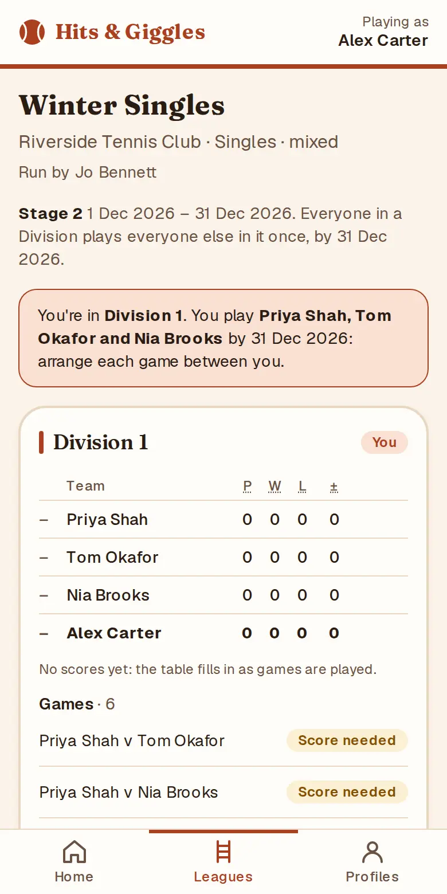
-
Closed means closed
Once a Stage has closed its scores are fixed. If one is wrong, ask whoever runs the league.
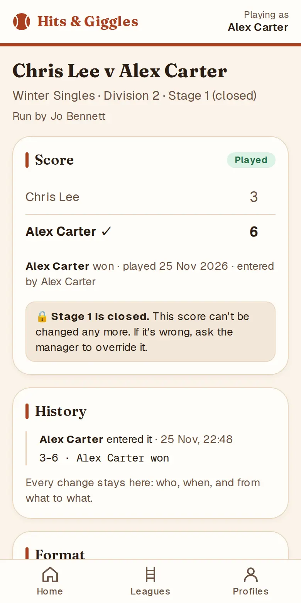
Look after your family
-
Add a child
One sign-in can hold several players. In Profiles press Add another player. They join your club with you, and need no email address of their own.
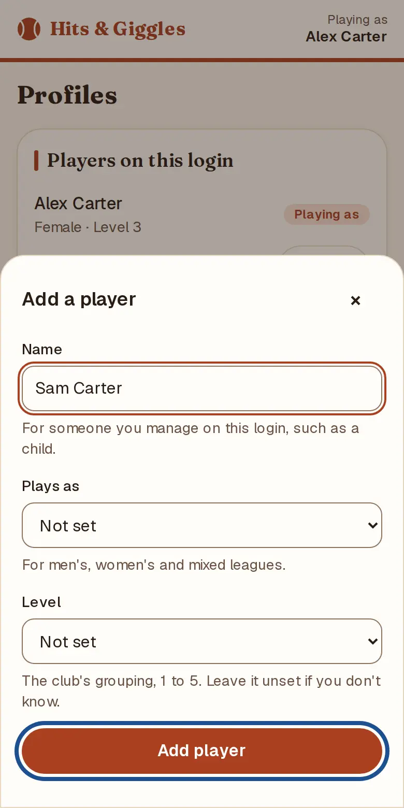
-
Switch who you’re playing as
Press the name at the top right to switch. Home, Leagues and scores then follow that player.
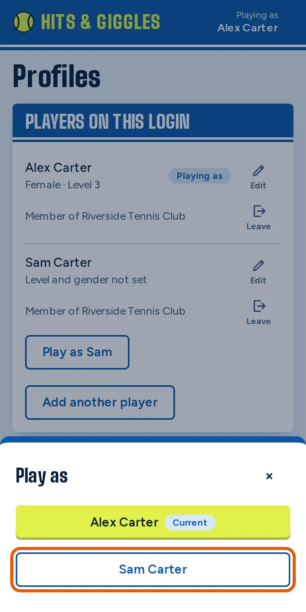
Good to know
- Who sees my email address?
- Your club’s managers, whoever runs a league you’re in or ask to join, and the app’s Admins. Other members see your name, your games and your scores. The privacy notice in the app has the detail.
- What if we can’t play in time?
- A Stage stays open until it’s closed. Past its date, Home and the ladder say it’s held up and on what. Whoever runs the league then records the score, or marks the game not played, which counts for nobody.
- My request to join a league wasn’t accepted.
- You can’t ask that league again, but whoever runs it can still add you. Ask them.
- Can I leave the club?
- Yes, in Profiles. Coming back may need a manager’s approval.
Running a league? The League manager’s guide is next.